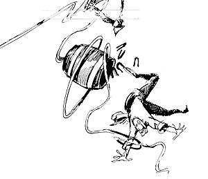

LASTLAUGH
WELL SIR, I JUST GOT IN FROM THE yearly National Storytelling Festival in Jonesboro, Tennessee. Had a rousing good time being entertained by 15 professional yarn spinners, including that calfpunching, bronco-busting, handlebarmustached cowboy poet Waddle Mitchell of Elko, Nevada. Waddle gave lilt to more than a dozen sentimental and humorous ditties, such as this one: "A Little Bull." (Read it out loud, pardner.)
This story is of three bulls All of a bovine breed, Who were traveling the desert together In search of a little feed. When on a knoll they came upon a meadow A spring had made, With bright green grass And trees about
That allowed for a little shade. Now the largest of the three bulls Bowed his neck and some snot was blown, Which was warning enough For the smaller two That he wanted this place for his own. So now there's just two bulls traveling In search of a place to stop To fill up on green grass and water, Which they found on a mountaintop. Now, this place suited both bulls to a tee. But, as oft happens, as history will show, The larger one thumped the smaller one good, So back to the trail he did go.
Now, there's a moral to this story, One I hope we'll learn today. And it's that sometimes A little bull will go a long, long way. Another verbal saddle-gem that Waddle related is Tony Ilardi's poem "The Cowboy's Accident." Pull your hankies out first, though: It's a tearjerker. Now a cowboy's life is kind of tough, And it's easy to get hurt. Like when you get throwed from your favorite horse, And land in a heap in the dirt. You've got to think ahead all the time And use all of your God-given wit; Or you can wind up all mangled and maimed And throwin' yourself quite a fit.
I had a friend who got hurt real bad, !I And I went to the hospital to see If he could tell me what happened to him. And this is what he said to me. "You know that old hay barn, The one over four stories tall? Well, I went up in the loft to get some horseshoes I'd stored up there last fall. The shoes were inside an oak whiskey barrel, It was full almost to the rim.
I couldn't find the sizes I wanted 'Cause the light was just too dim. So I decided to lower those shoes to the ground, Empty the barrel and sort 'em out. So I rolled the barrel to the upper door, And tied on it a rope sling stout. Last fall when I put that barrel in the loft, It took four men to hoist it up. But I figgered I could get it down by myself Comin' down's easier than goin' up. So I balanced that barrel delicately On the edge of the hayloft door, And to it I tied the rope that ran To the roof peak and down to ground floor. I knew with one pull of the rope That barrel would swing free in the breeze. Then hand over hand I could lower it down And sort them shoes with ease. Well, I really underestimated the weight of that barrel,
It must have weighed five hundred pounds. I'm a pretty stout guy, but even with my clothes I only weigh two hundred pounds. Well, you can imagine my surprise when I pulled that rope, I lost my presence of mind. I got jerked off the ground so doggon' fast, I forgot to turn loose of the line. Halfway up the side of the barn,
I met the barrel comin' down fast.
This explains my fractured shoulder 1] In the wreck we had as it passed Slowed only slightly, I continued my rapid ascent, Not stopping till I hit the pulley Where my hand got all broken and bent. At the same time the barrel hit the ground And the bottom, it split in two. After spillin' them shoes, the barrel in pounds Now just weighed a few. Well, as you might well imagine, I began to plummet to the ground. And halfway down I met that barrel As it sped up from the ground. This accounts for my fractured ankles and knees And the cuts on my legs so deep. But it slowed me down some, and when I hit the ground, I only broke both feet. As I lay there in pain unable to move, I again lost my presence of mind. As I moaned and groaned I forgot myself And turned loose of my hold on the line. The last thing I remember, Before waking up here on this bed, Was that empty barrel falling fast, And heading right straight for my head."
Waddle Mitchell recites 19 cowboy poems or his cassette tape, "Tradition,"available for $12.50 postpaid from Cowboy Poetry, P.O. Box 888, Elko, NV 89801. For information about the National Storytelling Festival, write NAPPS, P. 0. Box 309, Fonesboro, TN 37659.
|
 ILLUSTRATION BY TIM BORGERT |
|
|